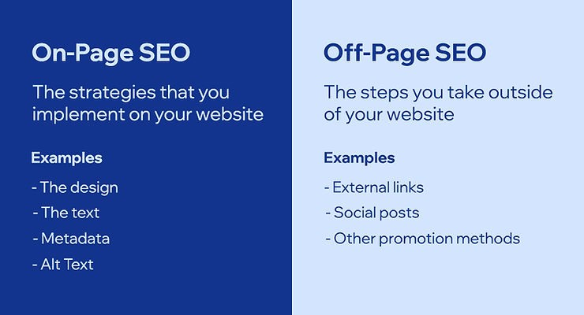
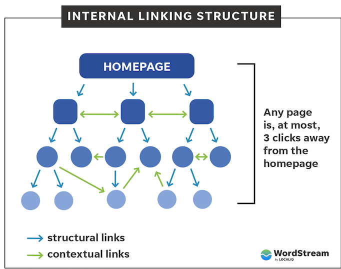
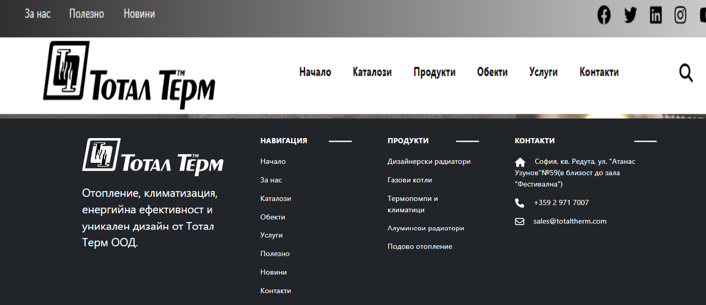
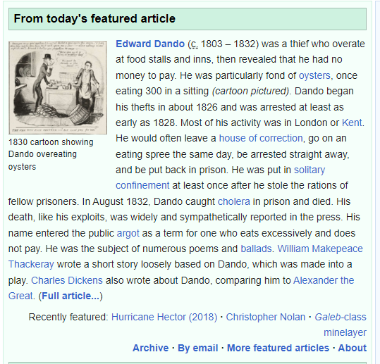

SEO представлява процесът на подобряване на нашият уебсайт и неговата видимост в Google,
Microsoft Bing, и други търсачки зависимо от дали хората търсят продукти които ние продаваме,
услуги които ние предоставяме или информация свързана в нашата сфера.
SEO се разделя на два вида, On-page и off-page и двете са важните при оптимизацията на нашият сайт.
При On-page SEO ние гледа да подобрим или оптимизираме нашият дизайн, текст, метадата или алтернативен текст на снимките.
При Off-page SEO имаме всичко друго което не е директно или конкретно свързано с нашият сайт,
примери за това са социални мрежи, реклами или линкове които водят до други сайтове или източници.

Снимка с разликите

Графа какъв трябва да е потока на потребителя
Стъпките нужни за успешно SEO са много но главно могат да се разделят на няколко категории, започвайки с добре направен уебсайт.
Той трябва да бъде лесен за навигация, да предоставя информацията точно и конкретно и също така да достави добро преживяване на потребителя.
С On-page SEO е важно нашият сайт да има лесен за навигация дизайн.
Също така е важно да се съдържат неща като меню или навигационни линкове за да можем лесно да се придвижваме.

Едно от най-важните неща за навигация на страница са менюто и футъра.
С тях можем много лесно да сложим всичките ключови части от нашият сайт,
било то информация за различни продукти, информация за самата компания
или просто начин да могат да се свържат с нас.
Важно е потребителя винаги да може да стигне обратно до главно страница само с един или два клика.
Това ни дава възможността да се фокусираме на индивидуалния "Page experience" за да сме сигурни
че нашите потребители повече време ще прекарат и натискат в страницата.
Друго важно нещо при изграждането на нашият уебсайт са линкове и различните ни връзки в сайта.
Те показват на Гугъл че този сайт е с някаква добра структура и ако има линкове към други сайтове,
със "авторитет" ни ще се издигнем все по нависко в очите на търсачката.

Но трябва да внимаваме какви линкове използваме. Ако линкове които използваме за други сайтове са без авторитет,
или са с нисък то ние ще пострадаме от това също. С помощта на "nofollow" този проблем може да се пребори или
ако имаме някаква реклама в сайта може да използваме "sponsored".
.svg)